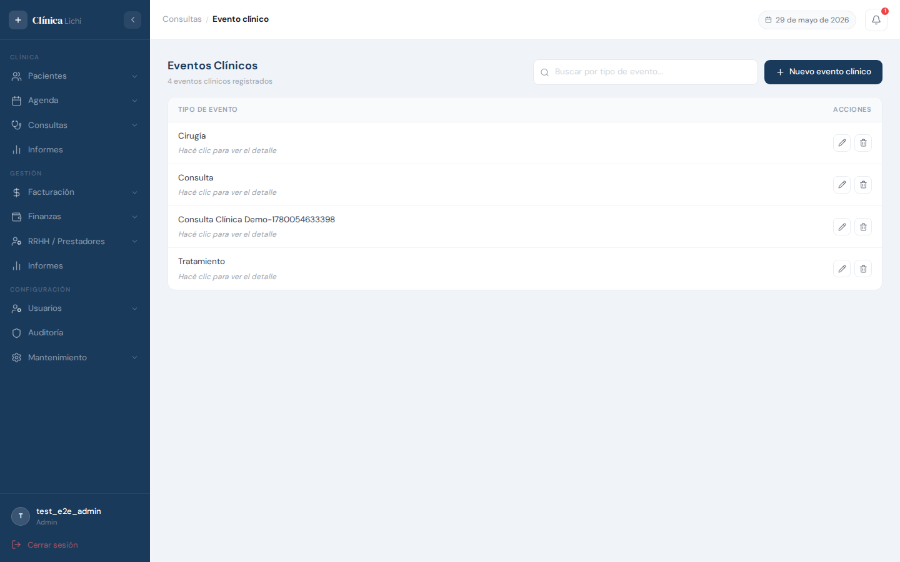
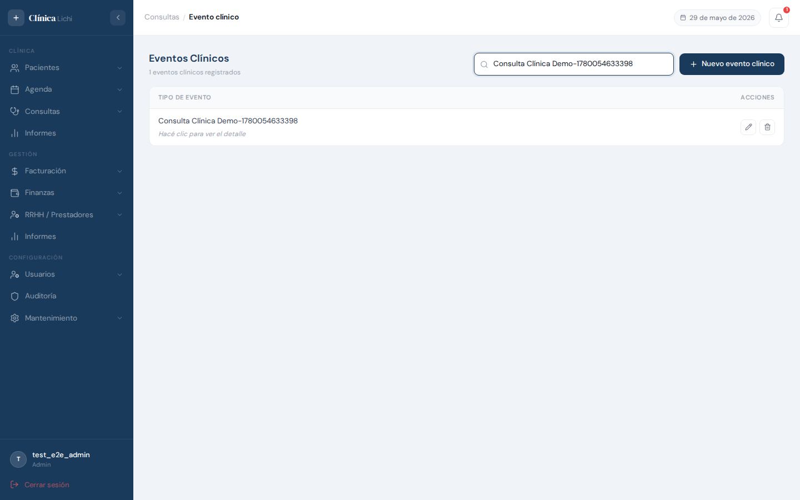
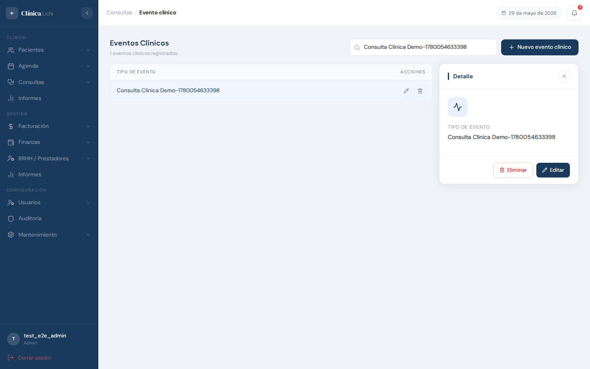
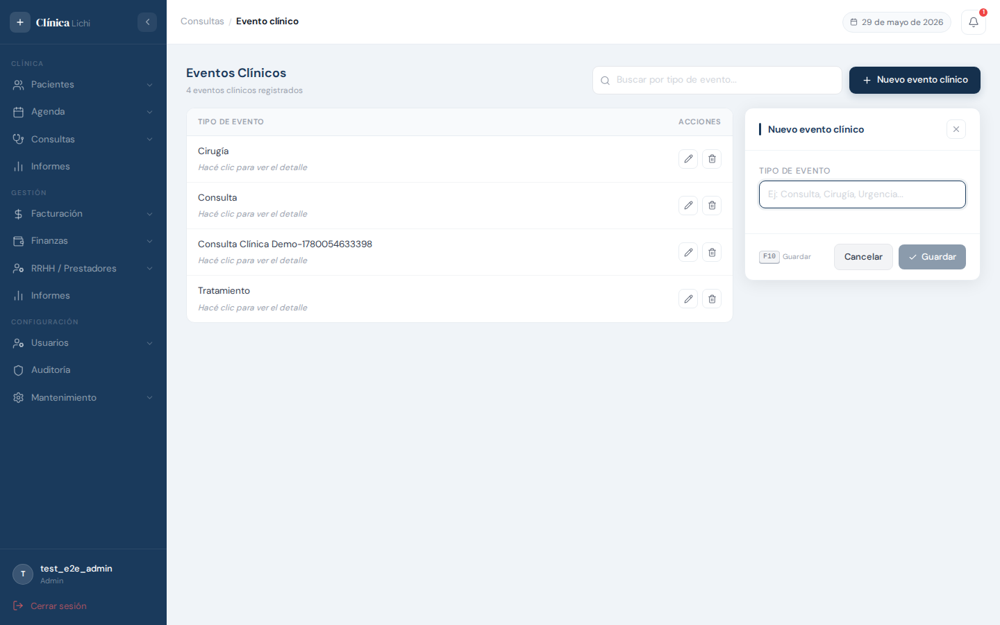
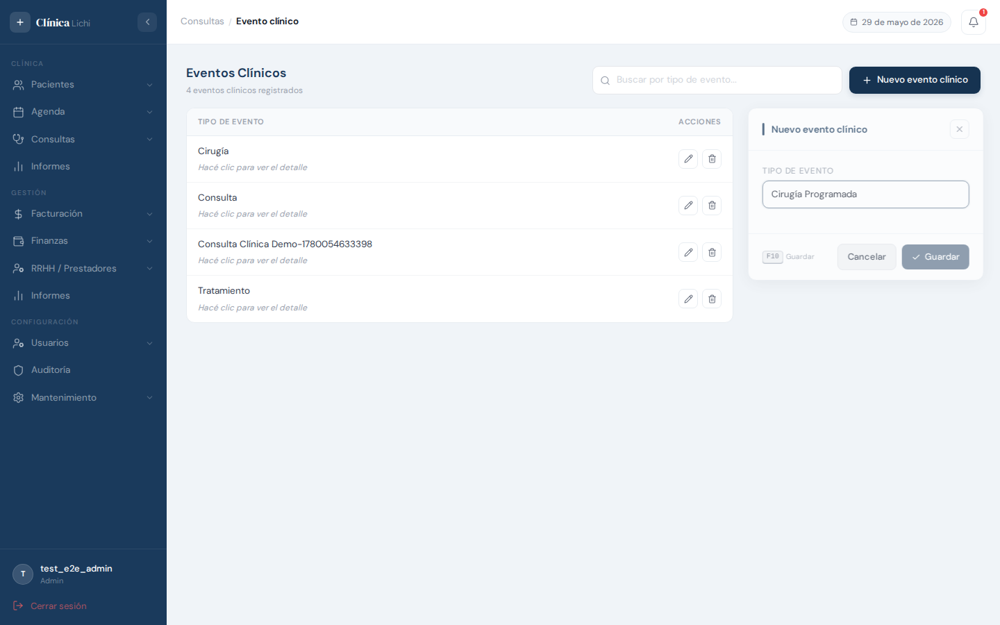
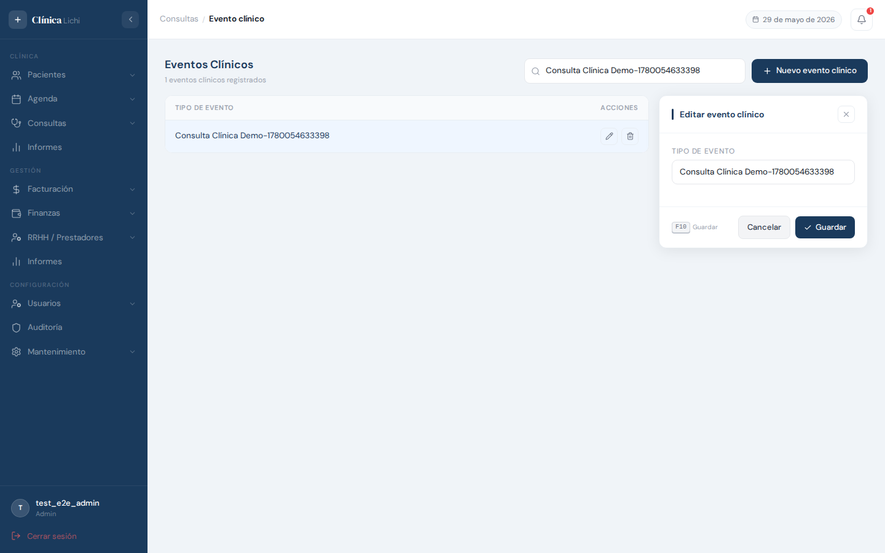
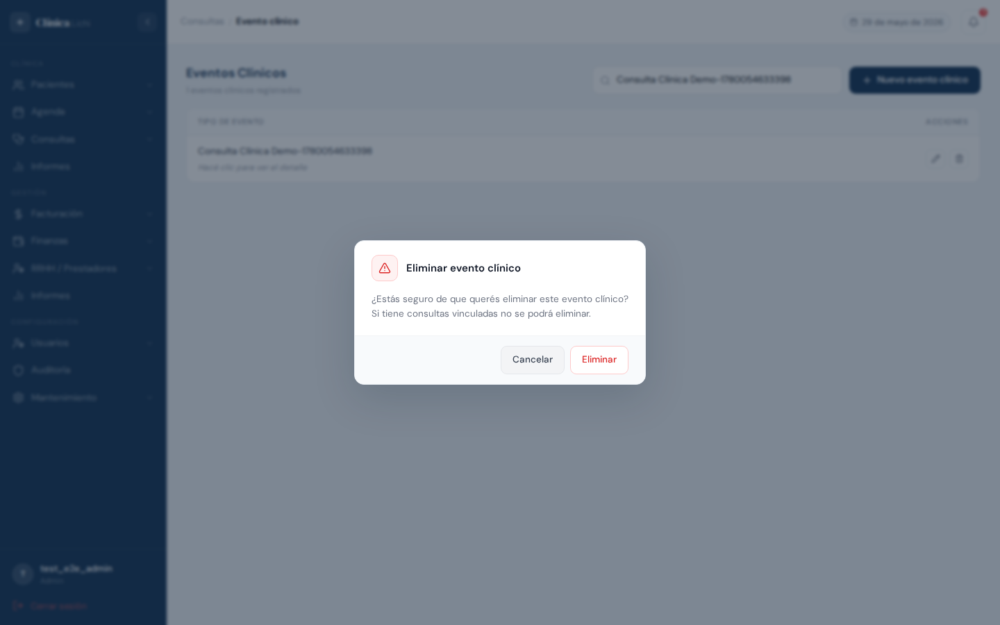
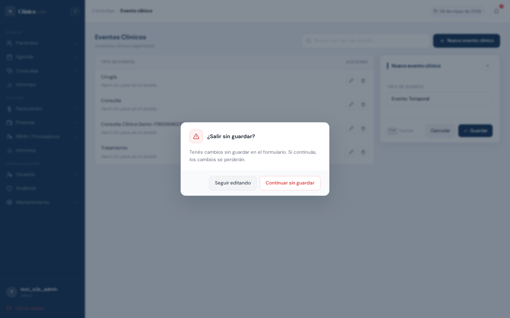

Descripción del módulo
El módulo Eventos Clínicos permite registrar y administrar los tipos de evento que clasifican las consultas médicas de la clínica. Cada evento se identifica con un nombre único que describe la naturaleza de la atención (ej: Consulta General, Cirugía Programada, Urgencia, Control Post-operatorio).
Al registrar una consulta médica, el profesional puede indicar a qué tipo de evento corresponde. Este dato queda registrado en el historial del paciente y permite filtrar y analizar la actividad clínica por categoría. Por eso es importante mantener este catálogo actualizado antes de comenzar a cargar consultas.
| Acción | Administrador | Recepcionista |
|---|---|---|
| Ver listado y detalle | ✅ | ✅ |
| Crear evento clínico | ✅ | ✅ |
| Editar evento clínico | ✅ | ✅ |
| Eliminar evento clínico | ✅ | 🚫 |
Acceder al módulo
En el menú lateral izquierdo, expandí la sección Consultas y hacé clic en Eventos clínicos.
Pantalla principal — listado de eventos clínicos
Al ingresar al módulo se muestra una tabla con todos los eventos clínicos activos registrados en el sistema, junto con la barra de búsqueda y el botón para crear uno nuevo. Los eventos se ordenan alfabéticamente de forma automática.

Columnas de la tabla
| Columna | Descripción |
|---|---|
| Tipo de evento | Nombre del evento clínico. Debajo aparece el texto "Hacé clic para ver el detalle" en las filas no seleccionadas. |
| Acciones |
Dos botones que aparecen al pasar el cursor sobre la fila: Editar — abre el panel lateral en modo edición
Eliminar — abre el diálogo de confirmación (solo Administrador)
|
Buscar un evento clínico
El campo de búsqueda en la parte superior derecha filtra la tabla en tiempo real por tipo de evento. La búsqueda tiene un retardo de 300 ms para evitar peticiones en cada tecla.

| Comportamiento | Detalle |
|---|---|
| Búsqueda por nombre | Filtra cualquier evento cuyo Tipo de evento contenga el texto (sin distinción de mayúsculas). |
| Búsqueda parcial | No hace falta escribir el nombre completo; con las primeras letras ya se filtra la lista. |
| Sin resultados | La tabla muestra el mensaje "Sin eventos clínicos registrados" con un ícono. |
| Limpiar búsqueda | Borrá el texto del campo para volver a ver todos los eventos. |
Ver detalle de un evento clínico
Hacé clic en cualquier parte de una fila de la tabla (excepto en los botones de acciones) para abrir el panel lateral derecho con los datos del evento en modo lectura.

El panel de detalle muestra:
- Ícono de actividad clínica en el encabezado del panel
- Tipo de evento: el nombre del evento clínico
Desde el panel de detalle podés ejecutar dos acciones:
Para cerrar el panel hacé clic en la X del encabezado del panel.
Crear un evento clínico
Hacé clic en el botón + Nuevo evento clínico en la esquina superior derecha (o presioná la tecla Insert cuando el panel esté cerrado).

Pasos para crear un evento clínico
- Hacé clic en + Nuevo evento clínico o presioná Insert. El panel lateral aparece con el título "Nuevo evento clínico" y el cursor se posiciona automáticamente en el campo Tipo de evento.
- Ingresá el nombre del evento en el campo Tipo de evento * (requerido). Ejemplos:
Consulta General,Cirugía Programada,Urgencia,Control Post-operatorio. - Hacé clic en Guardar o presioná F10 desde el campo del formulario.
- El panel se cierra automáticamente y el nuevo evento aparece en la tabla ordenado alfabéticamente. Se muestra una notificación verde de confirmación.

urgencia y
Urgencia se consideran el mismo. Si intentás crear un evento duplicado,
el sistema mostrará un error y el panel permanecerá abierto para que corrijas el valor.
Editar un evento clínico
Podés abrir el modo edición de dos formas: desde el ícono de lápiz en la fila de la tabla, o desde el botón Editar dentro del panel de detalle.

Pasos para editar
- Pasá el cursor sobre la fila del evento que querés modificar y hacé clic en el ícono ✏️, o abrí el detalle del evento y hacé clic en Editar.
- El panel lateral muestra el formulario de edición con el valor actual precargado.
- Modificá el tipo de evento.
- Hacé clic en Guardar o presioná F10.
- El panel vuelve al modo lectura mostrando el dato actualizado. Se muestra una notificación verde de confirmación.
Eliminar un evento clínico
Eliminar un evento clínico lo quita de las listas activas y del selector en la pantalla de consultas, pero no lo borra físicamente de la base de datos (borrado lógico). Los datos históricos vinculados permanecen intactos.
Pasos para eliminar
- Pasá el cursor sobre la fila del evento y hacé clic en el ícono de papelera 🗑️, o abrí el detalle y hacé clic en Eliminar.
- El sistema muestra un diálogo de confirmación con la advertencia sobre consultas vinculadas.
- Hacé clic en Eliminar para confirmar, o en Cancelar para volver sin cambios.
- El evento desaparece de la tabla. Se muestra una notificación verde de confirmación.

is_deleted = False) generan el bloqueo.
Protección de cambios sin guardar
El sistema detecta automáticamente cuando comenzaste a editar el formulario y no guardaste los cambios. Si intentás cerrar el panel, navegar a otro módulo o hacer clic en "Cancelar" con cambios pendientes, aparece un diálogo de advertencia.

| Opción | Qué hace |
|---|---|
| Seguir editando | Cierra el diálogo y vuelve al formulario con los cambios intactos para que puedas seguir editando o guardar. |
| Continuar sin guardar | Descarta todos los cambios realizados en el formulario y cierra el panel (o navega al destino solicitado). |
Situaciones en las que aparece el diálogo
- Hacés clic en Cancelar en el formulario (crear o editar)
- Hacés clic en la X del panel con cambios pendientes
- Hacés clic en otra fila de la tabla para cambiar el evento seleccionado
- Navegás a otro módulo desde el menú lateral
Mensajes de error frecuentes
| Mensaje | Situación | Qué hacer |
|---|---|---|
| "Ya existe un evento clínico con ese nombre" | Al crear o editar, el nombre ingresado ya lo usa otro evento activo (sin distinción de mayúsculas). | Usá un nombre diferente. Si creés que es un error, buscá el evento existente con ese nombre en la tabla. |
| "No se puede eliminar: el evento clínico tiene consultas activas vinculadas" | El evento está asignado a una o más consultas que aún están activas. | Navegá a Consultas → Consulta médica, localizá las consultas que usan ese evento y remové la asignación o aguardá a que finalicen. Luego volvé a intentar la eliminación. |
| Botón Guardar deshabilitado | El campo Tipo de evento está vacío. | Completá el campo con el nombre del evento antes de guardar. |
| El panel no se cierra tras hacer clic en Guardar | Hubo un error de validación (ej: nombre duplicado). El panel permanece abierto para que corrijas el valor. | Revisá el mensaje de error que aparece en la notificación roja y corregí el campo indicado. |
Comportamientos esperados que pueden confundirse con errores
| Situación | Explicación |
|---|---|
| No aparece el ícono de papelera 🗑️ en las filas | Tu rol es Recepcionista. Solo los Administradores pueden eliminar eventos clínicos. Es un comportamiento intencional. |
| No aparece el botón "Eliminar" en el panel de detalle | Mismo motivo: tu rol no tiene permiso de eliminación. |
| Al hacer clic en Cancelar aparece un diálogo inesperado | Es la protección de cambios sin guardar (sección 09). Escribiste algo en el formulario y el sistema te avisa antes de descartarlo. Hacé clic en "Seguir editando" para volver al formulario, o en "Continuar sin guardar" para cerrarlo. |
| La tabla muestra "Sin eventos clínicos registrados" aunque haya datos | Hay un filtro de búsqueda activo. Borrá el texto del campo de búsqueda para ver todos los eventos. |
| El evento recién creado no aparece al final de la lista | La tabla se ordena alfabéticamente. El nuevo evento se ubica según su nombre dentro del orden alfabético, no al final. |